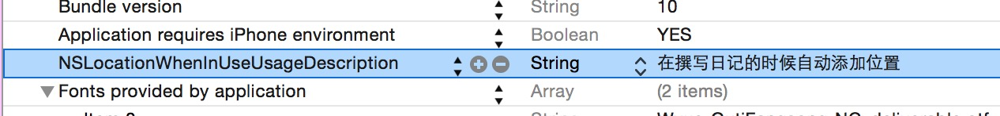
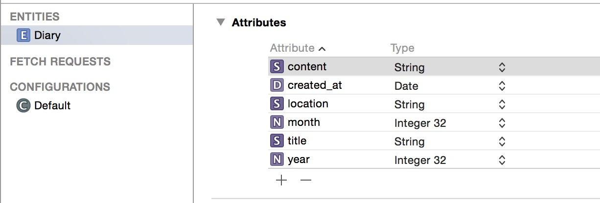
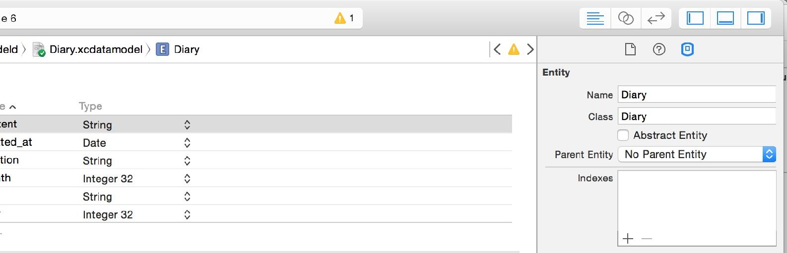
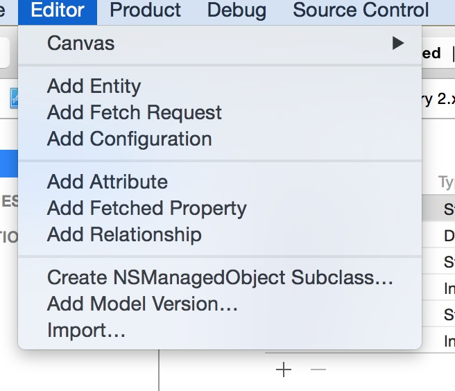
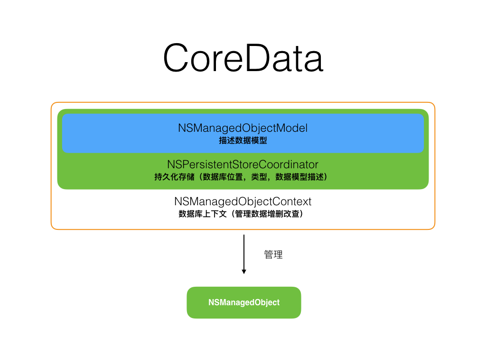
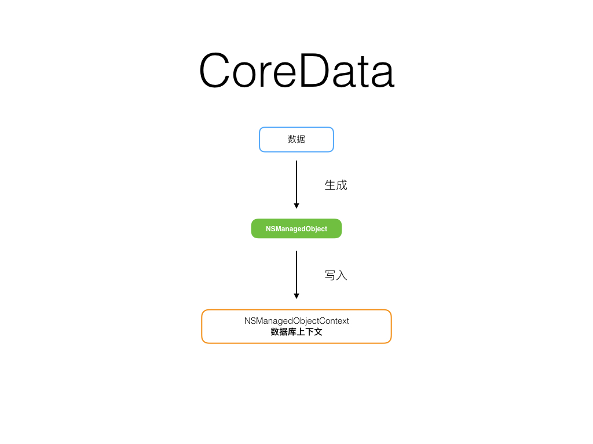

为了让点击撰的这个事件被捕捉，我们需要给 composeButton 增加如下代码
composeButton.addTarget(self,
action: "newCompose",
forControlEvents: UIControlEvents.TouchUpInside)
这个事件的处理分为了三步
Action 就是 Method，即运行什么方法的意思，Target 是指哪个对象会响应这个事件，Event 是指由什么事件触发，这里 TouchUpInside 的意思就是当用户按在了按钮的正中，然后抬起手指。
在外围，也要增加一个响应的函数，函数的名称正是上面 Action 的文字。
func newCompose() {
let identifier = "DiaryComposeViewController"
var composeViewController = self.storyboard?.
instantiateViewControllerWithIdentifier(identifier)
as! DiaryComposeViewController
self.presentViewController(composeViewController,
animated: true,
completion: nil)
}
又出现了我们缺少的 DiaryComposeViewController，这个 ViewController 可能是这个 App 里最复杂的部分。
日记大概需要这四个构成
这里我都使用了 UITextView 来创建前三个信息输入框，原因是复制方便。
composeView = UITextView(frame: CGRectMake(
0,
contentMargin + titleTextViewHeight, screenRect.width,
screenRect.height),
textContainer: container)
composeView.font = DiaryFont
composeView.editable = true
composeView.userInteractionEnabled = true
composeView.delegate = self
composeView.textContainerInset = UIEdgeInsetsMake(
contentMargin,
contentMargin,
contentMargin,
contentMargin)
//添加 LocationTextView
locationTextView = UITextView(frame: CGRectMake(0,
composeView.frame.size.height - 30.0,
screenRect.width - 60.0, 30.0))
locationTextView.font = DiaryLocationFont
locationTextView.editable = true
locationTextView.userInteractionEnabled = true
locationTextView.alpha = 0.0
locationTextView.bounces = false
这里值得一提的是 textContainerInset，几乎 UIView 的子类都支持类似的方法， 可以将内容挤压产生边距。
bounces 是指是否可以产生回弹效果，当你在 iPhone 滑动邮件列表的时候，到了顶端并不会立刻停止，而是会产生一个像弹簧一样的拉动效果，这个就是 bounces。
布局完成后，当用户点击了 UITextView 要输入文字的时候，locationTextView 可能会被挡在键盘下面，这时候我们就需要监听键盘事件来移动 locationTextView 的位置。
NSNotificationCenter.defaultCenter().addObserver(self,
selector: "keyboardDidShow:",
name: UIKeyboardDidShowNotification,
object: nil)
监听一个通知主要需要四个
Observer 是指由谁负责监听，NotificationName 是指监听什么事件，Selector 是监听到的信息由哪个方法来处理。
如果是自己发消息，Object 可以填入你想传送的数据，而这里因为是监听一个系统消息，所以并不需要我们填入数据。
keyboardDidShow 后面加了个冒号，意思是指这个方法接收参数，即下面的 notification: NSNotification
func keyboardDidShow(notification: NSNotification) {
if let rectValue = notification.
userInfo?[UIKeyboardFrameEndUserInfoKey] as? NSValue {
keyboardSize = rectValue.CGRectValue().size
updateTextViewSizeForKeyboardHeight(keyboardSize.height)
}
}
NSNotification 是我非常喜欢的一个特性，在 App 内传递消息变得非常方便。不管是在哪个地方，只要做一下响应的监听，就可以响应其他地方发出的消息。
获取传递过来的信息有两种方法，一种是 notification.userInfo 一种是 notification.object。
userInfo 一般是系统消息，object 则是你放入 Object 里的对象，你可以用 as 方法转换成你需要的类型。
iOS 的动画有许多实现方式，不过我想你最开始肯定想要一个最简单的方式。
updateTextViewSizeForKeyboardHeight 这个方法需要移动 LocationTextView 的位置，这里就可以通过 UIViewAnimation 来实现。
var newKeyboardHeight = keyboardHeight
UIView.animateWithDuration(1.0, delay: 0,
options: UIViewAnimationOptions.CurveEaseInOut,
animations:
{
self.finishButton.center = CGPointMake(
self.view.frame.width -
self.finishButton.frame.size.height/2.0 - 10,
self.view.frame.height - newKeyboardHeight
- self.finishButton.frame.size.height/2.0 - 10)
self.locationTextView.center = CGPointMake(
self.locationTextView.frame.size.width/2.0 + 20.0,
self.finishButton.center.y)
}, completion: nil)
不只是 center，其实很多属性都可以在这里移动，color、frame 大小、alpha 等。
获取地理位置我们可以通过 iOS 自带的地理位置服务，不过首先你需要在 Info.plist 里增加个 NSLocationWhenInUseUsageDescription 字段说明为什么你需要位置权限，这段文字也会在系统向用户要求权限的时候展示给用户。

我们又一次用到了 NSNotification 发送我们自定义的 DiaryLocationUpdated 来通知编辑界面记录位置信息。
import CoreLocation
class DiaryLocationHelper: NSObject,
CLLocationManagerDelegate {
var locationManager:CLLocationManager =
CLLocationManager()
var currentLocation:CLLocation?
var address:String?
var geocoder = CLGeocoder()
override init() {
super.init()
locationManager.delegate = self
locationManager.distanceFilter =
kCLDistanceFilterNone
// 设置位移通知最小间隔
locationManager.desiredAccuracy =
kCLLocationAccuracyNearestTenMeters
// 设置位置精确度
locationManager.
pausesLocationUpdatesAutomatically = true
// 当用户不再移动时自动暂停
locationManager.headingFilter = kCLHeadingFilterNone
// 用户朝向变化角度最小间隔
locationManager.requestWhenInUseAuthorization()
// 请求用户授权当 App 在使用时可以获取位置
if (CLLocationManager.locationServicesEnabled()){
// 查看用户是否已授权，如果授权则开始获取位置
locationManager.startUpdatingLocation()
}
}
func locationManager(manager: CLLocationManager,
didUpdateToLocation
newLocation: CLLocation,
fromLocation oldLocation: CLLocation) {
// 每当用户位置更新的时候，本方法就会被调用
geocoder.reverseGeocodeLocation(newLocation,
completionHandler: { (placemarks, error) in
//通过 reverseGeocodeLocation 查询用户位置的描述
if let error = error {
print("reverse geodcode fail: \(error.localizedDescription)")
}
// placemarks 里包括了位置的国家，省份，地区等信息
if let pm = placemarks {
if pm.count > 0 {
let placemark = pm.first
self.address = placemark?.locality
NSNotificationCenter.defaultCenter().
postNotificationName(
"DiaryLocationUpdated",
object: self.address)
// 将位置信息通过通知发送出去
}
}
})
}
}
Core Data 是 iOS 默认的数据库技术，也是 iOS 里相对复杂的技术，不过我们这里只用一个基本功能。
在创建 App 的时候，我们默认启用了 Core Data，这时候你的项目里会有一个 Diary.xcdatamodeld 文件。
点击这个文件后，右边就可以编辑数据库的数据结构，点击 Add Entity 添加一个 Diary 记录类型。

Attribute 是这个类型的一些属性结构，content 以 String 类型来存放日记正文，created_at 以 Date 类型存放创建日期，这里我们还添加了 month、title、year 这三个属性方便后面搜索。
在右边将 Class 名称改成 Diary

编辑完毕后，就可以导出成 NSManagedObject，为了能在 Swift 中正常使用，你还需要增加一个 @objc(Diary) 标识。

import Foundation
import CoreData
@objc(Diary)
class Diary: NSManagedObject {
@NSManaged var title: String?
@NSManaged var content: String
@NSManaged var created_at: NSDate
@NSManaged var location: String
@NSManaged var year: NSNumber
@NSManaged var month: NSNumber
}
这个文件和 Diary 的 Attribute 是一一对应的关系。
CoreData 的原理图如下

在 AppDelegate 里，Xcode 自动帮我们配置了 managedObjectModel
lazy var managedObjectModel: NSManagedObjectModel = {
// 描述数据模型描述文件存储位置
let modelURL = NSBundle.mainBundle().URLForResource(
"Diary", withExtension: "momd")!
return NSManagedObjectModel(contentsOfURL: modelURL)!
}()
persistentStoreCoordinator 持久化管理
lazy var persistentStoreCoordinator:
NSPersistentStoreCoordinator? = {
// 通过 managedObjectModel 创建持久化管理
var coordinator: NSPersistentStoreCoordinator? =
NSPersistentStoreCoordinator(managedObjectModel:
self.managedObjectModel)
let url = self.applicationDocumentsDirectory.
URLByAppendingPathComponent("Diary.sqlite")
// 设定数据库存储位置
var error: NSError? = nil
var failureReason = "There was an error creating or
loading the application's saved data."
do {
try coordinator!.addPersistentStoreWithType(
NSSQLiteStoreType, configuration: nil,
URL: url, options: nil)
// 创建 NSSQLiteStoreType 类型持久化存储
} catch var error1 as NSError {
...
} catch {
fatalError()
}
return coordinator
}()
以及 managedObjectContext 数据库上下文
lazy var managedObjectContext: NSManagedObjectContext? = {
let coordinator = self.persistentStoreCoordinator
if coordinator == nil {
return nil
}
var managedObjectContext = NSManagedObjectContext()
managedObjectContext.persistentStoreCoordinator =
coordinator
return managedObjectContext
}()
在平时，不出意外我们只需要跟 managedObjectContext 打交道，为了方便使用，我们可以在 AppDelegate 的顶端，可以创建两个静态变量
//Coredata
let appDelegate =
UIApplication.sharedApplication().delegate as! AppDelegate
let managedContext = appDelegate.managedObjectContext!
managedContext 是数据库的管理对象，通过这个对象就可以操作数据库的增删查改。
当你想要保存的日记的时候，就需要先用数据生成 NSManagedObject 再通过 managedObjectContext 进行持久化存储

那么，存储就可以用下面的代码轻松解决
let entity = NSEntityDescription.entityForName("Diary",
inManagedObjectContext: managedContext)
let newdiary = Diary(entity: entity!,
insertIntoManagedObjectContext:managedContext)
newdiary.content = composeView.text
newdiary.location = locationTextView.text
newdiary.title = titleTextView.text
newdiary.updateTimeWithDate(NSDate())
var error: NSError?
if !managedContext.save(&error) {
print("Could not save \(error), \(error?.userInfo)")
}
你可以在 Github 找到本章的工程文件。